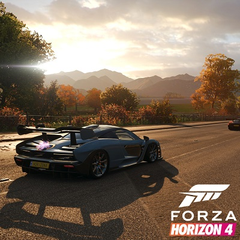

Assassin's Creed: Valhalla
Es un videojuego aventura y acción histórica.
Los jugadores tendrán la elección de jugar con Eivor como personaje masculino o femenino y serán capaz de seleccionar su cabello, pintura de guerra, ropa y armadura.
Una característica central del juego es el Asentamiento que el jugador, como Eivor, ayudará a construir y liderar durante el juego, según Ismail.
"Queremos que sientas que es tu hogar, que estás construyendo, a través de la acciones realizadas en el mundo, al final del día, yendo para alimentar al asentamiento de modo que pueda crecer, pueda florecer."
El jugador será capaz de dirigir construcción de tipos seguros de edificios qué en girar proporcionar beneficios para gameplay. Para construir estas estructuras, el jugador necesitará dirigir a los vikingos en incursiones para recoger recursos.
El combate naval regresará, con medios más rápidos para lograr las incursiones, y para huir después de un combate en tierra, más que combate con otros barcos navales.
Valhalla Es un juego de un solo jugador, pero incluirá componentes en línea con el propósito de animar a los jugadores de compartir su progreso y creatividad.
Como su predecesor, Valhalla implementará un árbol de habilidades, pero esto será más como una mezcla de árboles de habilidades.
Forza Horizon 4
Forza Horizon 4 es un videojuego de carreras ambientado en un mundo abierto entorno basado en una Gran Bretaña ficticia, con regiones que incluyen representaciones condensadas de Edimburgo, las Tierras Altas de Escocia, Lake District (incluyendo Derwentwater), Ambleside y Cotswolds (incluyendo Broadway), Bamburgh entre otros. El juego cuenta con un creador de rutas que permite a los jugadores crear carreras utilizando rutas completamente personalizadas.
El juego tiene lugar en un mundo compartido sincronizado, en comparación con los 'drivatars' impulsados por IA de sus predecesores, y cada servidor admite hasta 72 jugadores.
El juego también se puede jugar en modo fuera de línea.
El juego cuenta con un sistema meteorológico dinámico que también muestra el cambio de estaciones.
El entorno en el mundo cambiará según la temporada: por ejemplo, Derwentwater se congelaría en invierno y permitiría a los jugadores conducir sobre el hielo para llegar a áreas del mundo del juego que serían inaccesibles durante el resto del tiempo.
Las temporadas se fijan en los servidores del juego, lo que significa que todos los jugadores experimentarán las mismas condiciones al mismo tiempo que se vayan dando en los servidores.

Far Cry 6
Es un videojuego de disparos en primera persona.
La historia se desarrolla en Yara, una isla ficticia del Caribe, bajo un régimen fascista aparentemente inspirado en el gobierno de Fulgencio Batista, inspirado en Cuba, un mundo "detenido en el tiempo".
Far Cry 6 arroja a los jugadores al mundo rebosante de adrenalina de una revolución guerrillera actual.
Como dictador de Yara, Antón Castillo está decidido a recuperar la antigua gloria de su nación por todos los medios junto a su hijo, Diego, quien siempre está obedientemente a su lado. Únete a la guerrilla en una lucha en la que debes emplear lo que tienes a mano para hacer lo que haga falta, utiliza un arsenal de armas, autos y animales nuevos, únicos y sorprendentes para quemar hasta los cimientos el implacable régimen de Antón.
El pase de temporada de Far Cry 6 incluye misiones en las que el jugador controla a villanos de juegos anteriores de la franquicia Far Cry. Los personajes son Vaas de Far Cry 3, Pagan de Far Cry 4 y Joseph de Far Cry 5.
La jugabilidad sigue con la esencia de los videojuegos anteriores de Far Cry, con los jugadores usando armas improvisadas, vehículos y contratar ayuda, además del nuevo sistema "Fangs for Hire", para derrocar al régimen tiránico.